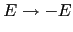
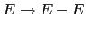
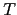

El ejemplo simple que sigue ilustra como construir un esquema de traducción.
El código completo puede encontrarlo en la página
![[*]](crossref.png) .
Un ejemplo de ejecución del programa se encuentra en la página
.
.
Un ejemplo de ejecución del programa se encuentra en la página
.
nereida:~/doc/casiano/PLBOOK/PLBOOK/code> head -n79 trans_scheme_simple2.pl | cat -n
1 #!/usr/bin/perl -w
2 use strict;
3 use Data::Dumper;
4 use Parse::Eyapp;
5 use IO::Interactive qw(is_interactive);
6
7 my $translationscheme = q{
8 %{
9 # head code is available at tree construction time
10 use Data::Dumper;
11
12 our %sym; # symbol table
13 %}
14
15 %metatree
16
17 %right '='
18 %left '-' '+'
19 %left '*' '/'
20
21 %%
22 line: %name EXP
23 exp <+ ';'> /* Expressions separated by semicolons */
24 { $lhs->{n} = [ map { $_->{n}} $_[1]->Children() ]; }
25 ;
26
27 exp:
28 %name PLUS
29 exp.left '+' exp.right
30 { $lhs->{n} = $left->{n} + $right->{n} }
31 | %name MINUS
32 exp.left '-' exp.right
33 { $lhs->{n} = $left->{n} - $right->{n} }
34 | %name TIMES
35 exp.left '*' exp.right
36 { $lhs->{n} = $left->{n} * $right->{n} }
37 | %name DIV
38 exp.left '/' exp.right
39 { $lhs->{n} = $left->{n} / $right->{n} }
40 | %name NUM $NUM
41 { $lhs->{n} = $NUM->{attr} }
42 | '(' $exp ')' %begin { $exp }
43 | %name VAR
44 $VAR
45 { $lhs->{n} = $sym{$VAR->{attr}}->{n} }
46 | %name ASSIGN
47 $VAR '=' $exp
48 { $lhs->{n} = $sym{$VAR->{attr}}->{n} = $exp->{n} }
49
50 ;
51
52 %%
53 # tail code is available at tree construction time
54 sub _Error {
55 my($token)=$_[0]->YYCurval;
56 my($what)= $token ? "input: '$token'" : "end of input";
57
58 die "Syntax error near $what.\n";
59 }
60
61 sub _Lexer {
62 my($parser)=shift;
63
64 for ($parser->YYData->{INPUT}) {
65 $_ or return('',undef);
66
67 s/^\s*//;
68 s/^([0-9]+(?:\.[0-9]+)?)// and return('NUM',$1);
69 s/^([A-Za-z][A-Za-z0-9_]*)// and return('VAR',$1);
70 s/^(.)// and return($1,$1);
71 s/^\s*//;
72 }
73 }
74
75 sub Run {
76 my($self)=shift;
77 return $self->YYParse( yylex => \&_Lexer, yyerror => \&_Error );
78 }
79 }; # end translation scheme
Las líneas 7-79 no hacen otra cosa que iniciar una cadena conteniendo el esquema de traducción. También podríamos haberlo escrito en un fichero y compilarlo con eyapp .
Un programa eyapp es similar en muchos aspectos a
un programa eyapp / yacc y se divide en tres partes:
la cabeza, el cuerpo
y la cola. Cada una de las partes va separada de las otras por el
símbolo %% en una línea aparte. Así, el %% de la línea 21
separa la cabeza del cuerpo. En la cabecera se colocan el
código de inicialización, las declaraciones de terminales, las reglas
de precedencia, etc. El cuerpo contiene las reglas de la gramática y
las acciones asociadas. Por último, la cola de un program eyapp
se separa del cuerpo por otro %% en una línea aparte.
La cola contiene las rutinas de soporte al código que aparece en las acciones
asi como, posiblemente, rutinas para el análisis léxico (subrutina _Lexer
en la línea 58)
y el tratamiento de errores (subrutina _Error en la línea 54).
Puede encontrar una descripción de la gramática de eyapp
usando su propia notación en la página
.
Por defecto Parse::Eyapp se comporta de manera similar a eyapp
y yacc generando un analizador sintáctico LALR(1) y ejecutando
las acciones empotradas según una antiderivación a derechas, esto es en un
recorrido del árbol de análisis sintáctico
de abajo hacia arriba y de izquierda a derecha.
Mediante la directiva %metatree en la línea 15
le indicamos a Parse::Eyapp que debe generar un
esquema de traducción. En tal caso, al llamar al analizador
el código empotrado no es ejecutado sino que se genera un árbol
de análisis sintáctico con los correspondientes nodos de código
colgando del árbol en las posiciones que les corresponden.
Las reglas de producción de la gramática están entre
las líneas 21 y 52. Cada entrada comienza con el nombre de la variable sintáctica
y va seguida de las partes derechas de sus reglas de producción separadas por barras
verticales. Opcionalmente se le puede dar un nombre a la regla de producción
usando la directiva %name . El efecto que tiene esta directiva
es bendecir - durante la fase tree construction time -
el nodo del árbol sintáctico en una clase con nombre el
argumento de %name (los nodos del árbol sintáctico son objetos).
El código - entre llaves - puede ocupar cualquier lugar en el lado
derecho.
En las acciones los atributos de los nodos pueden ser accedidos usando
el array mágico @_. De hecho, los códigos insertados en el árbol
sintáctico son convertidos en subrutinas anónimas.
Así $_[0] es una referencia al nodo
padre asociado con el lado izquierdo, $_[1] el asociado
con el primer símbolo de la parte derecha, etc. Esta notación posicional
es confusa e induce a error: si el programador cambia la regla posteriormente insertando
acciones o símbolos en la parte derecha, ¡todas las apariciones de índices en
el código que se refieran a nodos a la derecha del insertado
deben ser modificadas!. Algo similar ocurre si decide suprimir una acción o un
símbolo. Por ello Parse::Eyapp
proporciona mediante la notación punto la posibilidad de
hacer una copia automática con nombre del atributo: la notación
exp.left indica que la variable léxica $left
guardará una referencia al nodo que corresponde a esta instanciación de la variable
sintáctica exp. Además Parse::Eyapp provee la variable
léxica especial $ lhs donde se guarda una referencia al nodo padre.
Así la regla:
exp.left '-' exp.right
{ $lhs->{n} = $left->{n} - $right->{n} }
equivale al siguiente código:
exp '-' exp
{
my $lhs = shift;
my ($left, $right) = @_[1, 3];
$lhs->{n} = $left->{n} - $right->{n}
}
Si se desea usar el propio nombre de la variable sintáctica como
nombre del atributo se usa la notación dolar. Asi la notación
$exp puede considerarse una abreviación a la notación exp.exp.
El código:
$VAR '=' $exp
{ $lhs->{n} = $sym{$VAR->{attr}}->{n} = $exp->{n} }
equivale a este otro:
VAR '=' exp
{
my $lhs = shift;
my ($VAR, $exp) = @_[1, 3];
$lhs->{n} = $sym{$VAR->{attr}}->{n} = $exp->{n}
}
Consideremos la parte derecha de la regla de producción:
program: definition<%name PROGRAM +>.program
observe los siguientes detalles:
PROGRAM se le da a la lista no vacía
de repeticiones de definition.
Funciona como un paréntesis de agrupamiento y es opcional. Podríamos haber escrito:
program: definition %name PROGRAM +.program
pero es, sin duda, mas confuso para el lector.
program: definition %name PROGRAM +.program
no podemos usar la notación dolar. Este código que pretende ser equivalente al anterior:
program:
$definition<%name PROGRAM +>
produce un mensaje de error:
nereida:~/doc/casiano/PLBOOK/PLBOOK/code> eyapp Simple4 *Fatal* $ is allowed for identifiers only (Use dot notation instead), at line 149 at file Simple4.eypLa razón del mensaje es doble:
definition a
algo que es una lista y por tanto plural: debería ser algo parecido a
definitions. La decisión del programador es inadecuada.
$definition<%name PROGRAM +> es interpretada
como $(definition<%name PROGRAM +>). El dolar esta actuando sobre
la expresión compuesta definition<%name PROGRAM +> que no es un identificador.
La solucion: En vez del dolar deberemos usar la notación punto para darle nombre al atributo, como se ha hecho en el ejemplo.
La ejecución de un esquema de traducción por Parse::Eyapp
ocurre en tres tiempos.
En una primera parte - que denominaremos Class Construction Time - se analiza la gramática y se crea la clase que contendrá el analizador sintáctico. Esto se hace llamando al método de clase new_grammar el cual devuelve una cadena conteniendo información sobre las ambiguedades, conflictos y errores que pueda tener la gramática:
84 my $warnings = Parse::Eyapp->new_grammar( 85 input=>$translationscheme, 86 classname=>'main', 87 firstline => 6, 88 outputfile => 'main.pm'); 89 die "$warnings\nSolve Ambiguities. See file main.output\n" if $warnings;
El nombre de la clase o package en el que se crea el analizador se especifica mediante el argumento classname .
El argumento firstline facilita la emisión de errores y warnings indicando la línea en que comienza la cadena que contiene el esquema de traducción.
Si se especifica el argumento outputfile => filename los resultados
del análisis se volcarán en los ficheros filename.pm y filename.output
los cuales contienen respectivamente el código del analizador e información
pormenorizada sobre las tablas usadas por el analizador y los conflictos
y ambiguedades encontradas durante el estudio de la gramática.
Una vez creada la clase es posible instanciar objetos del tipo analizador
llamando al constructor new de la clase creada:
90 my $parser = main->new();
En una segunda parte - que denominaremos
Tree Construction Time - se toma la entrada (usando para ello el analizador
léxico y las rutinas de error proveídas por el programador)
y se procede a la construcción del árbol.
Las acciones
especificadas por el programador en el esquema no son ejecutadas sino
que se añaden al árbol como referencias a subrutinas (nodos de tipo CODE).
El programador puede influir en la construcción del árbol por medio de diversas directivas. De estas explicaremos tres:
Como se ha dicho, la directiva %name class hace que el nodo asociado con la
instanciación de la regla de producción se bendiga en la clase dada por la cadena
class.
La directiva %begin { ... code ...} usada en la línea 42 hace que el
código usado como argumento { ... code ...} se ejecute en Tree Construction Time.
27 exp:
28 %name PLUS
29 exp.left '+' exp.right
30 { $lhs->{n} = $left->{n} + $right->{n} }
31 | %name MINUS
.. . ............................................
42 | '(' $exp ')' %begin { $exp }
En el ejemplo la directiva %begin { $exp } hace que nos saltemos
el nodo asociado con el paréntesis enlazando directamente la raíz del árbol
referenciado por $exp con el padre de la regla actual.
Si no se hubiera insertado esta directiva el árbol construido para
la entrada 2*(3+4) sería similar a este:
TIMES
|-- NUM -- TERMINAL( attr => 2 )
|-- '*'
`-- E_7
|-- '('
|-- PLUS
| |-- NUM -- TERMINAL( attr => 3 )
| |-- '+'
| `-- NUM -- TERMINAL( attr => 4 )
`-- ')'
El efecto de la directiva %begin { $exp } es retornar la referencia
a la expresión parentizada dando lugar al siguiente árbol:
TIMES
|-- NUM -- TERMINAL( attr => 2 )
|-- '*'
`-- PLUS
|-- NUM -- TERMINAL( attr => 3 )
|-- '+'
`-- NUM -- TERMINAL( attr => 4 )
En general,
las acciones asociadas con directivas %begin
modifican la construcción del árbol sintáctico
concreto para dar lugar a un árbol de análisis sintáctico abstracto adecuado
a los requerimientos de las fases posteriores.
Las acciones en Tree Construction Time insertadas mediante %begin
se ejecutan colaborativamente con las acciones de construcción del árbol
en el orden
usual de los analizadores LR: según una antiderivación a derechas,
esto es, en un
recorrido del árbol de análisis sintáctico
de abajo hacia arriba (de las hojas hacia la raíz) y de izquierda a derecha.
Las acciones en Tree Construction Time
reciben como argumentos en $_[1], $_[2], etc. las referencias a los
nodos del árbol asociadas con los elementos de la parte derecha.
En Tree Construction Time el argumento $_[0]
es una referencia al objeto analizador sintáctico.
La segunda fase en nuestro ejemplo ocurre en las líneas 90-92
en las que leemos la entrada y llamamos al método
Run el cual construye el árbol:
90 print "Write a sequence of arithmetic expressions: " if is_interactive();
91 $parser->YYData->{INPUT} = <>;
92 my $t = $parser->Run() or die "Syntax Error analyzing input";
El método Run se limita a llamar al método YYParse que es quien
realiza el análisis:
74 sub Run {
75 my($self)=shift;
76 return $self->YYParse( yylex => \&_Lexer, yyerror => \&_Error );
77 }
Cuando el método YYParse proveido por Parse::Eyapp es llamado
es necesario que hayan sido especificadas las correspondientes
referencias a las rutinas de análisis léxico
(argumento con clave yylex)
y de tratamiento de errores (argumento con clave yyerror).
Despues de esta fase tenemos el árbol de análisis extendido con los
nodos de tipo CODE.
En una tercera parte - que denominaremos Execution Time - el árbol es recorrido
en orden primero-profundo y los nodos de la clase CODE son ejecutados. El
árbol será modificado y decorado como consecuencia de las acciones
y podremos examinar los resultados:
93 $t->translation_scheme;
94 my $treestring = Dumper($t);
95 our %sym;
96 my $symboltable = Dumper(\%sym);
97 print <<"EOR";
98 ***********Tree*************
99 $treestring
100 ******Symbol table**********
101 $symboltable
102 ************Result**********
103 $t->{n}
104
105 EOR
El método translation_scheme tiene una estructura simple
y tiene un código similar a este:
sub translation_scheme {
my $self = shift; # root of the subtree
my @children = $self->children();
for (@children) {
if (ref($_) eq 'CODE') {
$_->($self, @children);
}
elsif (defined($_)) {
translation_scheme($_);
}
}
}
Como se ve en el código de translation_scheme la subrutina
asociada se le pasan como argumentos referencias al nodo y a los hijos del nodo.
Durante la fase de construcción del árbol sintáctico
los nodos que corresponden a terminales o tokens de la gramática
son -por defecto - bendecidos en la clase "${PREFIX} TERMINAL ".
Si el programador no ha indicado lo contrario en la llamada al analizador,
$PREFIX es la cadena vacía.
(Véase el párrafo en la página sobre el argumento yyprefix
del método constructor del analizador).
Los nodos de la clase TERMINAL poseen
al menos dos atributos token y attr. El atributo
token indica que clase de terminal es (NUM, IDENTIFIER, etc.).
El atributo attr nos da el valor semántico del terminal tal y como
fué recibido del analizador léxico.
26 line: %name PROG
27 exp <%name EXP + ';'>
28 { @{$lhs->{t}} = map { $_->{t}} ($lhs->child(0)->Children()); }
29
30 ;
expresa que el lenguaje generado por el no terminal line esta formado por
secuencias no vacías de frases generadas a partir de exp separadas por
puntos y comas. En concreto, el analizador generado por eyapp transforma
la regla line: exp <%name EXP + ';'> en:
line: %name EXP
PLUS-1
;
PLUS-1: %name _PLUS_LIST
PLUS-1 ';' exp
| exp
;
La expresión exp <+ ';'> es tratada como un único elemento de la parte
derecha y su atributo es un nodo de la clase _PLUS_LIST cuyos
hijos son los elementos de la lista. Por ejemplo, para la entrada
a=2; b = 2*a el analizador construye un árbol similar a este:
bless( {
'children' => [
bless( { # _PLUS_LIST
| 'children' => [
| bless( { # ASSIGN a = 2
| | 'children' => [
| | bless( { 'attr' => 'a', 'token' => 'VAR' }, 'TERMINAL' ),
| | bless( { 'attr' => '=', 'token' => '=' }, 'TERMINAL' ),
| | bless( { # NUM 2
| | 'children' => [
| | bless( { 'attr' => '2', 'token' => 'NUM' }, 'TERMINAL' ),
| | sub { my $lhs = $_[0]; my $NUM = $_[1]; $lhs->{n} = $NUM->{attr} }
| | ]
| | }, 'NUM' ),
| | sub { my ($lhs, $exp, $VAR) = ($_[0], $_[3], $_[1]);
| | $lhs->{n} = $sym{$VAR->{attr}}->{n} = $exp->{n} }
| | ]
| }, 'ASSIGN' ),
| bless( { # ASSIGN b = 2*a
| | 'children' => [
| | bless( { 'attr' => 'b', 'token' => 'VAR' }, 'TERMINAL' ),
| | bless( { 'attr' => '=', 'token' => '=' }, 'TERMINAL' ),
| | bless( { # TIMES 2*a
| | 'children' => [
| | bless( { .... }, 'NUM' ),
| | bless( { 'attr' => '*', 'token' => '*' }, 'TERMINAL' ),
| | bless( { .... }, 'VAR' ),
| | sub { ... }
| | ]
| | }, 'TIMES' ),
| | sub { ... }
| | ]
| }, 'ASSIGN' )
| ]
}, '_PLUS_LIST' ),
sub { ... }
]
}, 'EXP' )
Observe que, por defecto, los nodos punto y coma (;) son eliminados del nodo
lista de hijos del nodo _PLUS_LIST. Por defecto, en los
nodos creados por Parse::Eyapp desde listas
declaradas mediante operadores de brackets (por ejemplo St <+ ';'>
o ID <* ','>) se
elimina el separador si este fué definido mediante una cadena (uso de apostrofes).
Diremos que un terminal es un terminal sintáctico o
syntax token si fue definido en el programa eyapp
mediante una cadena delimitada por
apóstrofes.
Si queremos cambiar el estatus de un syntax token, por ejemplo
si queremos
que el separador ';' del ejemplo forme parte de la lista deberemos añadir a la cabecera
la declaración %semantic token ';'.
Si creamos una nueva versión
de nuestro programa trans_scheme_simple3.pl añadiendo esta declaración:
%semantic token ';' %right '=' ....Las listas contendran los puntos y comas. En tal caso, la línea 24 dará lugar a un error9.1ya que los nodos punto y coma carecen del atributo
n:
24 { $lhs->{n} = [ map { $_->{n}} $_[1]->Children() ]; }
En efecto:
nereida:~/src/perl/YappWithDefaultAction/examples> trans_scheme_simple3.pl > salida a=2*3; b = a+1; c = a-b Use of uninitialized value in join or string at trans_scheme_simple3.pl line 99, <> line 1. Use of uninitialized value in join or string at trans_scheme_simple3.pl line 99, <> line 1.Al usar la declaración %semantic token la nueva estructura del árbol es:
bless( {
'n' => [ 6, undef, 7, undef, -1 ],
'children' => [
bless( {
'children' => [
bless( { 'n' => 6, ................ ] }, 'ASSIGN' ),
bless( { 'children' => [], 'attr' => ';', 'token' => ';' }, 'TERMINAL' ),
bless( { 'n' => 7, ................ }, 'ASSIGN' ),
bless( { 'children' => [], 'attr' => ';', 'token' => ';' }, 'TERMINAL' ),
bless( { 'n' => -1, ................ }, 'ASSIGN' )
]
}, '_PLUS_LIST' ),
sub { "DUMMY" }
]
}, 'EXP' )
Parse::Eyapp extiende Parse::Yapp con listas vacías y no vacías
usando los operadores *, +:
La regla:
A : B C * 'd'
es equivalente a:
A : B L 'd'
L : /* vacío */
| P
P : C P
| C
Es posible especificar la presencia de símbolos
opcionales usando ?.
Observe que el operador de concatenación tiene menor prioridad que
los operadores de listas, esto es la expresión AB* es interpretada
como A(B*).
Una secuencia de símbolos en la parte derecha de una regla de producción puede ser agrupada mediante el uso de paréntesis. Al agrupar una secuencia se crea una variable sintáctica intermedia que produce dicha secuencia. Por ejemplo, la regla:
A : B (C { dosomething(@_) })? D
es equivalente a:
A : B T1 D
T1 : /* vacío */
| T2
T2 : C { dosomething(@_) }
Hay numerosas ambiguedades en la gramática asociada con el
esquema de traducción presentado en la página
.
Las ambiguedades se resuelven exactamente igual
que en yacc usando directivas en la cabecera o
primera parte que indiquen como resolverlas.
Entre las ambiguedades presentes en la gramática del ejemplo estan las siguientes:
e - e - e?
¿Como (e - e) - e? ¿o bien e - (e - e)?
La respuesta la da la asignación de asociatividad a los operadores
que hicimos en la cabecera.
Al declarar como asociativo a izquierdas al terminal -
hemos resuelto este tipo de ambiguedad. Lo que estamos haciendo es
indicarle al analizador que a la hora de elegir entre
los árboles abstractos elija siempre el árbol que se hunde a izquierdas.
e - e * e?
¿Como (e - e) * e? ¿o bien e - (e * e)?
En eyapp los terminales declarados mediante directivas
%left, %right y %nonassoc
tienen asociada una prioridad. Esa prioridad es
mayor cuanto mas abajo en el texto está la línea
de su declaración.
Un terminal puede ser también declarado con la directiva %token en
cuyo caso no se le asocia prioridad.
Al declarar que el operador * tiene mayor prioridad que el operador -
estamos resolviendo esta otra fuente de ambiguedad. Esto es así pues
el operador * fué declarado después que el operador -.
Le indicamos así al analizador que construya el árbol asociado con
la interpretación e - (e * e).
En eyapp La prioridad asociada con una regla de producción es la del último terminal que aparece en dicha regla.
Una regla de producción puede ir seguida de una directiva %prec la cual le da una prioridad explícita. Esto puede ser de gran ayuda en ciertos casos de ambiguedad. Por ejemplo, si quisieramos introducir el uso el menos unario en la gramática surgiría una ambiguedad:
39 | %name UMINUS
40 '-' $exp %prec NEG
41 { $lhs->{n} = -$exp->{n} }
¿Cual es la ambiguedad que surge con esta regla?
Una de las ambiguedades de esta regla
esta relacionada con el doble significado
del menos como operador unario y binario: hay frases
como -e-e que tiene dos posibles interpretaciones:
Podemos verla como (-e)-e o bien como -(e-e).
Hay dos árboles posibles. El analizador, cuando este analizando
la entrada -e-e y vea el
segundo - deberá escoger uno de los dos árboles.
¿Cuál?.
El conflicto puede verse como una ``lucha'' entre
la regla exp: '-' exp la cual interpreta la frase como
(-e)-e y la segunda aparición del terminal -
el cuál ``quiere entrar'' para que gane la regla exp: exp '-' exp
y dar lugar a la interpretación -(e-e).
En este caso, si atendemos a la norma enunciada de que
la prioridad asociada con una regla de producción
es la del último terminal que aparece en dicha regla,
las dos reglas

y

tienen
la prioridad del terminal -.
Lo que hace la declaración %prec NEG de la línea
40 es modificar la prioridad de la regla
para que tenga la
del terminal NEG. El terminal NEG lo declaramos
en la cabecera del programa, dándole la prioridad adecuada:
17 %right '=' 18 %left '-' '+' 19 %left '*' '/' 20 $right NEG 21 %%
- e - e si no
se hubiese introducido el terminal de desempate NEG?
e = e - e?
Parse::Eyapp
(por ejemplo las listas) suponen la inserción de reglas dentro de la gramática
de entrada y por tanto pueden dar lugar a ambiguedades.
eyapp crea una variable sintáctica temporal 
e introduce una nueva regla:
esta modificación puede dar lugar a conflictos.
Recuerde que la fase de análisis sintáctico y léxico de
la entrada ocurre en Tree Construction Time.
En consecuencia el primer argumento que recibe el método _Error
(líneas 53-59) cuando es llamado
por el analizador sintáctico es una referencia al objeto analizador
sintáctico. Dicho objeto dispone de un conjunto de métodos, muchos de los cuales
ya existían en Parse::Yapp. Entre estos últimos se encuentra el método
YYCurval que es llamado en la línea 55 y que devuelve
el terminal/token que estaba siendo analizado en el momento en el que
se produjo el error. Si dicho token no está definido es que hemos alcanzado el
final del fichero (línea 56).
54 sub _Error {
55 my($token)=$_[0]->YYCurval;
56 my($what)= $token ? "input: '$token'" : "end of input";
57
58 die "Syntax error near $what.\n";
59 }
Otros métodos que pueden ser de ayuda en el diagnóstico de errores son YYCurval que devuelve el atributo del token actual y YYExpect que devuelve una lista con los terminales esperados en el momento en el que se produjo el error.
El analizador léxico esta tomado de los ejemplos
que acompañan a Parse::Yapp. Se supone que la entrada
se ha dejado dentro del objeto analizador en $parser->YYData->{INPUT}.
Recuerde que el análisis léxico de la entrada ocurre en Tree Construction Time.
En consecuencia el primer argumento que recibe _Lexer cuando es llamado
por el analizador sintáctico es la referencia al objeto analizador
sintáctico. De ahí que lo primero que se hace, en la línea 59, sea
crear en $parser una variable léxica que referencia dicho objeto.
58 sub _Lexer {
59 my($parser)=shift;
60
61 $parser->YYData->{INPUT}
62 or return('',undef);
63
64 $parser->YYData->{INPUT}=~s/^\s*//;
65
66 for ($parser->YYData->{INPUT}) {
67 s/^([0-9]+(?:\.[0-9]+)?)// and return('NUM',$1);
68 s/^([A-Za-z][A-Za-z0-9_]*)// and return('VAR',$1);
69 s/^(.)// and return($1,$1);
70 s/^\s*//;
71 }
72 }
for de la línea 66?Obsérvese el falso bucle for en la línea 66. Es un truco que constituye una de esas frases hechas o idioms que aunque la primera vez resultan extrañas, a fuerza de verlas repetidas se convierten en familiares.
El bucle de hecho se ejecutará una sóla vez en cada llamada
a _Lexer. El objetivo es evitar las costosas indirecciones
a las que obliga almacenar la entrada en $parser->YYData->{INPUT}.
Para ello se aprovecha la capacidad del bucle for sin índice
de crear en $_ un alias del elemento visitado en la iteración.
$_ dentro del falso for? ¿Ganamos algo con ello?
for que diga
$_ or return('',undef);?
$parser->YYData->{INPUT}
contiene la cadena vacía?
$parser->YYData->{INPUT} contiene sólamente la cadena '0'?
En el ejemplo anterior la acción es asociada con los nodos
PLUS, MINUS, TIMES y DIV es similar.
Parse::Eyapp proporciona una directiva % defaultaction
la cual permite especificar la acción por defecto. Esta acción es asociada
con las reglas que no tienen una acción asociada explícita. El siguiente
ejemplo muestra su uso:
nereida:~/doc/casiano/PLBOOK/PLBOOK/code> cat -n trans_scheme_default_action.pl
1 #!/usr/bin/perl
2 use strict;
3 use warnings;
4 use Data::Dumper;
5 use Parse::Eyapp;
6 use IO::Interactive qw(interactive);
7
8 my $translationscheme = q{
9 %{
10 # head code is available at tree construction time
11 use Data::Dumper;
12
13 our %sym; # symbol table
14 %}
15
16 %defaultaction { $lhs->{n} = eval " $left->{n} $_[2]->{attr} $right->{n} " }
17
18 %metatree
19
20 %right '='
21 %left '-' '+'
22 %left '*' '/'
23
24 %%
25 line: %name EXP
26 exp <+ ';'> /* Expressions separated by semicolons */
27 { $lhs->{n} = $_[1]->Last_child->{n} }
28 ;
29
30 exp:
31 %name PLUS
32 exp.left '+' exp.right
33 | %name MINUS
34 exp.left '-' exp.right
35 | %name TIMES
36 exp.left '*' exp.right
37 | %name DIV
38 exp.left '/' exp.right
39 | %name NUM $NUM
40 { $lhs->{n} = $NUM->{attr} }
41 | '(' $exp ')' %begin { $exp }
42 | %name VAR
43 $VAR
44 { $lhs->{n} = $sym{$VAR->{attr}}->{n} }
45 | %name ASSIGN
46 $VAR '=' $exp
47 { $lhs->{n} = $sym{$VAR->{attr}}->{n} = $exp->{n} }
48
49 ;
50
51 %%
52 sub Error {
53 die "Syntax error near ".($_[0]->YYCurval?$_[0]->YYCurval:"end of file")."\n";
54 }
55
56 sub Lexer {
57 my($parser)=shift;
58
59 for ($parser->YYData->{INPUT}) {
60 s/^\s*//;
61 $_ eq '' and return('',undef);
62 s/^([0-9]+(?:\.[0-9]+)?)// and return('NUM',$1);
63 s/^([A-Za-z][A-Za-z0-9_]*)// and return('VAR',$1);
64 s/^(.)// and return($1,$1);
65 }
66 }
67 }; # end translation scheme
68
69 $Data::Dumper::Indent = 1;
70 $Data::Dumper::Terse = 1;
71 $Data::Dumper::Deepcopy = 1;
72 my $warnings = Parse::Eyapp->new_grammar(
73 input=>$translationscheme,
74 classname=>'Calc',
75 firstline => 6,
76 outputfile => 'Calc.pm');
77 die "$warnings\nSolve Ambiguities. See file main.output\n" if $warnings;
78 my $parser = Calc->new();
79 print {interactive} "Write a sequence of arithmetic expressions: ";
80 $parser->YYData->{INPUT} = <>;
81 my $t = $parser->YYParse( yylex => \&Calc::Lexer, yyerror => \&Calc::Error );
82 $t->translation_scheme;
83 my $treestring = Dumper($t);
84 my $symboltable;
85 {
86 no warnings;
87 $symboltable = Dumper(\%Calc::sym);
88 }
89 print <<"EOR";
90 ***********Tree*************
91 $treestring
92 ******Symbol table**********
93 $symboltable
94 ************Result**********
95 $t->{n}
96
97 EOR
El método Last_child usado en la línea 27 devuelve una referencia al
último hijo no código del nodo.
Al ser $_[1] un nodo de tipo '_PLUS_LIST' queda garantizado que
el último hijo no es una referencia a una subrutina asi que podría haberse
usado el método last_child el cual devuelve el último hijo
del nodo, sea este código o no.
La línea 86 tiene por efecto desactivar los avisos. De otra manera se produciría
un warning con respecto al uso único de la variable %Calc::sym:
nereida:~/doc/casiano/PLBOOK/PLBOOK/code> echo "a=2*3; b=a+1" | trans_scheme_default_action.pl
Name "Calc::sym" used only once: possible typo at trans_scheme_default_action.pl line 85.
***********Tree*************
bless( {
'n' => 7,
'children' => [
............
]
}, 'EXP' )
******Symbol table**********
{
'a' => { 'n' => 6 },
'b' => { 'n' => 7 }
}
************Result**********
7
En el siguiente ejemplo se muestra la implementación en eyapp del ejemplo
4.7.1. El código es similar salvo por la presencia
de flechas de referenciado:
nereida:~/src/perl/YappWithDefaultAction/examples> cat -n trans_scheme_simple_decls2.pl
1 #!/usr/bin/perl -w
2 use strict;
3 use Data::Dumper;
4 use Parse::Eyapp;
5 our %s; # symbol table
6
7 my $ts = q{
8 %token FLOAT INTEGER NAME
9
10 %{
11 our %s;
12 %}
13
14 %metatree
15
16 %%
17 Dl: D <* ';'>
18 ;
19
20 D : $T { $L->{t} = $T->{t} } $L
21 ;
22
23 T : FLOAT { $lhs->{t} = "FLOAT" }
24 | INTEGER { $lhs->{t} = "INTEGER" }
25 ;
26
27 L : $NAME
28 { $NAME->{t} = $lhs->{t}; $s{$NAME->{attr}} = $NAME }
29 | $NAME { $NAME->{t} = $lhs->{t}; $L->{t} = $lhs->{t} } ',' $L
30 { $s{$NAME->{attr}} = $NAME }
31 ;
32 %%
33 };
34
35 sub Error { die "Error sintáctico\n"; }
36
37 { # Closure of $input, %reserved_words and $validchars
38 my $input = "";
39 my %reserved_words = ();
40 my $validchars = "";
41
42 sub parametrize__scanner {
43 $input = shift;
44 %reserved_words = %{shift()};
45 $validchars = shift;
46 }
47
48 sub scanner {
49 $input =~ m{\G\s+}gc; # skip whites
50 if ($input =~ m{\G([a-z_A_Z]\w*)\b}gc) {
51 my $w = uc($1); # upper case the word
52 return ($w, $w) if exists $reserved_words{$w};
53 return ('NAME', $1); # not a reserved word
54 }
55 return ($1, $1) if ($input =~ m/\G([$validchars])/gc);
56 die "Caracter invalido: $1\n" if ($input =~ m/\G(\S)/gc);
57 return ('', undef); # end of file
58 }
59 } # end closure
60
61 Parse::Eyapp->new_grammar(input=>$ts, classname=>'main', outputfile=>'Types.pm');
62 my $parser = main->new(yylex => \&scanner, yyerror => \&Error); # Create the parser
63
64 parametrize__scanner(
65 "float x,y;\ninteger a,b\n",
66 { INTEGER => 'INTEGER', FLOAT => 'FLOAT'},
67 ",;"
68 );
69
70 my $t = $parser->YYParse() or die "Syntax Error analyzing input";
71
72 $t->translation_scheme;
73
74 $Data::Dumper::Indent = 1;
75 $Data::Dumper::Terse = 1;
76 $Data::Dumper::Deepcopy = 1;
77 $Data::Dumper::Deparse = 1;
78 print Dumper($t);
79 print Dumper(\%s);
Al ejecutarlo con la entrada "float x,y;\ninteger a,b\n"
los contenidos finales del arbol son:
nereida:~/src/perl/YappWithDefaultAction/examples> trans_scheme_simple_decls2.pl
bless({'children'=>[
bless({'children'=>[
| bless({'children'=>[
| | bless({'children'=>[
| | | bless({'children'=>[],'attr'=>'FLOAT','token'=>'FLOAT'},'TERMINAL'),
| | | sub {use strict 'refs'; my $lhs=$_[0]; $$lhs{'t'}='FLOAT'; }
| | | ],
| | | 't'=>'FLOAT'
| | },'T_8'), # T -> FLOAT
| | sub { ... },
| | bless({'children'=>[
| | | bless({'children'=>[],'attr'=>'x','token'=>'NAME','t'=>'FLOAT'},'TERMINAL'),
| | | sub{ ... },
| | | bless({'children'=>[],'attr'=>',','token'=>','},'TERMINAL'),
| | | bless({'children'=>[
| | | | bless({'children'=>[],'attr'=>'y','token'=>'NAME','t'=>'FLOAT'},
| | | | 'TERMINAL'),
| | | | sub{ ... }
| | | | ],
| | | | 't'=>'FLOAT'
| | | },'L_10'), # L -> NAME
| | | sub{ ... }
| | | ],
| | | 't'=>'FLOAT'
| | },'L_11'), # L -> NAME ',' L
| | undef
| | ]
| },'D_6'), # D -> T L
| bless({
| ... # tree for integer a, b
| },'D_6') # D -> T L
| ]
},'_STAR_LIST_1'),
]
},'Dl_5') # Dl : D <* ';'> equivale a: Dl : /* empty */ | S_2; S_2: S_1; S_1: S_1 ';' D | D
Los contenidos de la tabla de símbolos %s quedan como sigue:
{
'y'=>bless({'children'=>[],'attr'=>'y','token'=>'NAME','t'=>'FLOAT'},'TERMINAL'),
'a'=>bless({'children'=>[],'attr'=>'a','token'=>'NAME','t'=>'INTEGER'},'TERMINAL'),
'b'=>bless({'children'=>[],'attr'=>'b','token'=>'NAME','t'=>'INTEGER'},'TERMINAL'),
'x'=>bless({'children'=>[],'attr'=>'x','token'=>'NAME','t'=>'FLOAT'},'TERMINAL')
}
Como se ha mencionado, durante la fase Tree Construction los nodos son bendecidos en el nombre de la regla de producción. El nombre de una regla de producción es, por defecto, la concatenación de la variable en el lado izquierdo (LHS) con el número de orden de la regla. Es posible modificar el nombre por defecto usando la directiva %name .
Si se desean evitar posibles colisiones con clases existentes es posible prefijar todos los nombres de las clases con un prefijo dado usando el parámetro yyprefix en la llamada al constructor del analizador:
my $warnings = Parse::Eyapp->new_grammar( input=>$translationscheme, classname=>'main', firstline => 6, outputfile => 'main.pm'); die "$warnings\nSolve Ambiguities. See file main.output\n" if $warnings; # Prefix all the classes with 'Calc::' my $parser = main->new(yyprefix => 'Calc::');El resultado de esta llamada a
new es que las clases de los nodos
quedan prefijadas con Calc::. Por ejemplo el árbol creado
para la frase a=1 será:
bless( { 'children' => [
bless( { 'children' => [
bless( { 'children' => [
bless( { 'children' => [], 'attr' => 'a', 'token' => 'VAR' }, 'Calc::TERMINAL' ),
bless( { 'children' => [], 'attr' => '=', 'token' => '=' }, 'Calc::TERMINAL' ),
bless( { 'children' => [
bless( { 'children' => [], 'attr' => '1', 'token' => 'NUM' }, 'Calc::TERMINAL' ),
]
}, 'Calc::NUM' ),
]
}, 'Calc::ASSIGN' )
]
}, 'Calc::_PLUS_LIST' ),
]
}, 'Calc::EXP' )
Es mas eficiente aislar el código del esquema de traducción en un fichero
(se asume por defecto el tipo .eyp) y generar el módulo que contiene
el código del analizador usando el guión eyapp .
El siguiente ejemplo muestra un ejemplo de compilación separada.
El esquema de traducción convierte expresiones
en infijo a postfijo. De un lado tenemos el fichero TSPostfix2.eyp
conteniendo el esquema:
nereida:~/src/perl/YappWithDefaultAction/examples> cat -n TSPostfix2.eyp
1 # File TSPostfix2.eyp
2 %right '='
3 %left '-' '+'
4 %left '*' '/'
5 %left NEG
6
7 %{
8 use Data::Dumper;
9 $Data::Dumper::Indent = 1;
10 $Data::Dumper::Deepcopy = 1;
11 #$Data::Dumper::Deparse = 1;
12 use IO::Interactive qw(interactive);
13 %}
14
15 %metatree
16
17 %defaultaction {
18 if (@_==4) { # binary operations: 4 = lhs, left, operand, right
19 $lhs->{t} = "$_[1]->{t} $_[3]->{t} $_[2]->{attr}";
20 return
21 }
22 die "Fatal Error. Unexpected input\n".Dumper(@_);
23 }
24
25 %%
26 line: %name PROG
27 exp <%name EXP + ';'>
28 { @{$lhs->{t}} = map { $_->{t}} ($lhs->child(0)->Children()); }
29
30 ;
31
32 exp: NUM { $lhs->{t} = $_[1]->{attr}; }
33 | VAR { $lhs->{t} = $_[1]->{attr}; }
34 | VAR '=' exp { $lhs->{t} = "$_[1]->{attr} $_[3]->{t} =" }
35 | exp '+' exp
36 | exp '-' exp
37 | exp '*' exp
38 | exp '/' exp
39 | '-' exp %prec NEG { $_[0]->{t} = "$_[2]->{t} NEG" }
40 | '(' exp ')' %begin { $_[2] }
41 ;
42
43 %%
44
45 sub _Error {
46 my($token)=$_[0]->YYCurval;
47
48 my($what)= $token ? "input: '$token'" : "end of input";
49 die "Syntax error near $what.\n";
50 }
51
52 my $x; # Used for input
53
54 sub _Lexer {
55 my($parser)=shift;
56
57 $x =~ s/^\s+//;
58 return('',undef) if $x eq '';
59
60
61 $x =~ s/^([0-9]+(?:\.[0-9]+)?)// and return('NUM',$1);
62 $x =~ s/^([A-Za-z][A-Za-z0-9_]*)// and return('VAR',$1);
63 $x =~ s/^(.)//s and return($1,$1);
64 }
65
66 sub Run {
67 my($self)=shift;
68 $x = <>;
69 my $tree = $self->YYParse( yylex => \&_Lexer, yyerror => \&_Error,
70 #yydebug => 0xFF
71 );
72
73 print Dumper($tree);
74 $tree->translation_scheme();
75 print Dumper($tree);
76 {
77 local $" = ";";
78 print "Translation:\n@{$tree->{t}}\n";
79 }
80 }
Observe el uso del método Children - con C mayúscula -
en la línea 28:
devuelve los hijos del nodo no incluyendo las referencias
a subrutinas.
A diferencia de su homólogo con c minúscula children
el cual devuelve todos los hijos del nodo,
incluyendo las referencias al código empotrado.
Compilamos con eyapp:
nereida:~/src/perl/YappWithDefaultAction/examples> eyapp TSPostfix2 nereida:~/src/perl/YappWithDefaultAction/examples> ls -ltr | tail -2 -rw-r----- 1 pl users 1781 2006-10-30 13:08 TSPostfix2.eyp -rw-r--r-- 1 pl users 7611 2006-10-30 13:12 TSPostfix2.pm
De otro lado tenemos el programa cliente
el cual se limita a cargar el módulo y llamar
al método Run:
nereida:~/src/perl/YappWithDefaultAction/examples> cat -n usetspostfix2.pl
1 #!/usr/bin/perl -w
2 use strict;
3 use TSPostfix2;
4
5 my $parser = new TSPostfix2();
6 $parser->Run;
Al ejecutar el programa se produce una salida similar a esta
(la salida ha sido editada para darle mayor claridad):
nereida:~/src/perl/YappWithDefaultAction/examples> usetspostfix2.pl
1 a=2
2 ...
3 $VAR1 = bless( { 'children' => [
4 bless( { 'children' => [
5 | bless( { 'children' => [
6 | | bless( { 'children' => [], 'attr' => 'a', 'token' => 'VAR' }, 'TERMINAL' ),
7 | | bless( { 'children' => [], 'attr' => '=', 'token' => '=' }, 'TERMINAL' ),
8 | | bless( { 'children' => [
9 | | bless( { 'children' => [], 'attr' => '2', 'token' => 'NUM' }, 'TERMINAL' ),
10 | | sub { "DUMMY" }
11 | | ],
12 | | 't' => '2'
13 | | }, 'exp_4' ),
14 | | sub { "DUMMY" }
15 | | ],
16 | | 't' => 'a 2 ='
17 | }, 'exp_6' )
18 | ]
19 }, 'EXP' ),
20 sub { "DUMMY" }
21 ],
22 't' => [ 'a 2 =' ]
23 }, 'PROG' );
24 Translation:
25 a 2 =
Como puede verse en la salida, cuando no se especifica el nombre del nodo asociado
con la regla de producción se genera un nombre por defecto que consiste en la concatenación
del nombre de la variable sintáctica en el lado izquierdo y el número de orden
de la regla de producción. Así el nodo descrito en las líneas 5-17 tiene por nombre
exp_6 indicando que corresponde a la sexta regla de producción de exp.
El nodo en las líneas 4-19 tiene por nombre EXP. Su nombre
le fué dado mediante la directiva %name en la línea
27 exp <%name EXP + ';'>Es posible insertar una directiva %name en una lista usando esta sintáxis.
Nótese también que si hubieramos usado la opción Data::Dumper::Deparse (línea 11) podríamos
hacer que Data::Dumper nos informe no sólo de la presencia de código
sino que nos muestre el código fuente que ocupa esa posición.